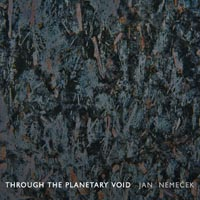

Surreal sounds and dark emptiness of space is what describes Jan Nemecek’s ambient epic “Through The Planetary Void”. It was concieved as a soundtrack to a complete ambient journey. Beginning with a reflection of pure, simple frequency across the galaxy while travelling through lush soundscape of unheard sounds, “Through The Planetary Void” manages to evoke sounds from an alien planet, visions of vast space only surpassed by the unknown of the “Planetary Void”. This project was originally recorded as an hour-long voyage into space, using instruments that we can only associate with something familiar, even earthly, while contrasting the eerie sounds from space never heard by any human. “Through The Planetary Void” manages to encompass a plethora of genres – from unearthly beautiful textures, world percussion and sounds to the rawness of dark ambience. Clocking in at just under hour, “Planetary Void” takes you on an excursion into unknown and unexplored depths of space, strange planets and evokes imagery of alien dawns, all that “outside the known universe”. 
Album credits:Composed and recorded by: Jan Nemeček Produced and mixed by: Jan Nemeček and Vojin Šarčević Original artwork: Predrag Miladinović The album is out on Blue Water records and will be sold through all major digital music stores. It will be available from November 1st 2005 for $9.99. |
Jan Nemeček was born in Belgrade, Serbia where he resides today. He started playing piano at the early age and had his first live appearance at the age of ten making the soundtrack for the children TV series, later broadcasted on the most popular TV in the country. His affection for electronic music was developed when he was introduced to an vintage drum machine and the tape recorder which was used to experiment with various recording techniques Later, Jan moved on with music and started using MIDI sequencers that were available at the time. With the appearance of software instruments and computer audio recordings, he started mixing and recording all his projects into the computer. At the moment, all of his projects are recorded in his expanding project studio. He recently completed a musical project where he collaborated with various well-known Serbian musicians. Besides that, Jan is also doing various other projects like commercials, soundtracks, etc. By establishing contacts and relations with the similar authors outside his home country, Jan contributed to a certain number of mutual projects published worldwide, including his solo track featured on «Listening Lounge - The World Finest Unsigned Artists 2004», sponsored by world famous magazine «Computer Music». Besides, he collaborates with the companies worldwide as a sound designer where he conceives his own copyrighted presets for software and hardware synthesizers (Wusik, Hartmann, Manytone...) that are now available as the standard factory presets. The results of his interest in experimenting with the possibilities of natural and synthesised sound, sampling techniques etc. and this conceptual and musical signature is both audible and visible while listening to «Through The Planetary Void». While
Jan's never had an intention to make music out of pre-recorded loops
and samples, his sole interest while working with sound and his
player's technique was to create the vast, universal atmosphere, both
in intellectual and emotional way. His music struggles to open the door
of that world, which Jan intends to explore furthermore in his future
work. |
Copyright © Jan Nemecek 2003-2005
All Rights Reserved